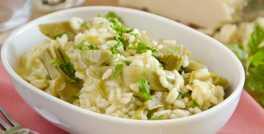

Ingredientes: Alcachofas Arroz Aceite Preparación: Quitar las hojas exteriores de las alcachofas, hasta llegar a la parte tierna. Cortar el el corezón de la alcachofa en trozos, en 5 o 6 trozos. Freir la alcachofa con aceite de oliva.  Idea de presentación